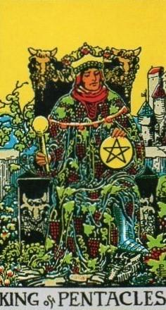
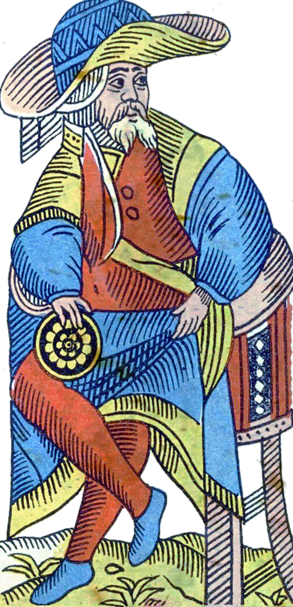
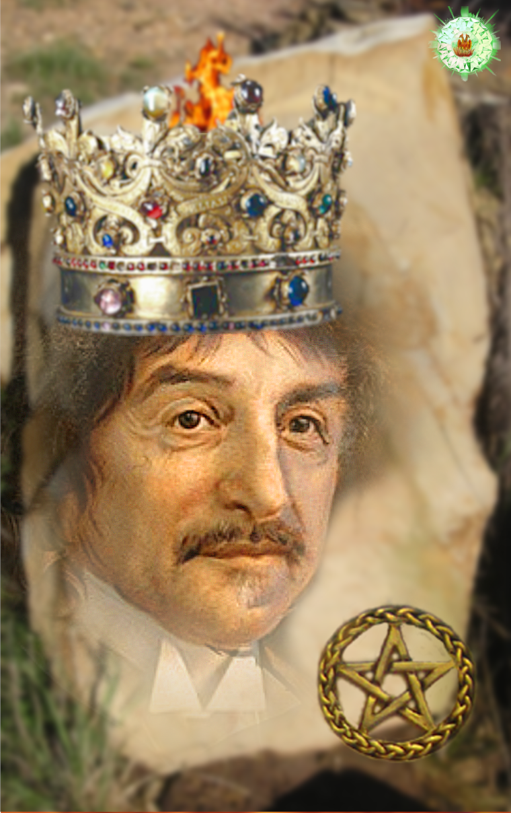
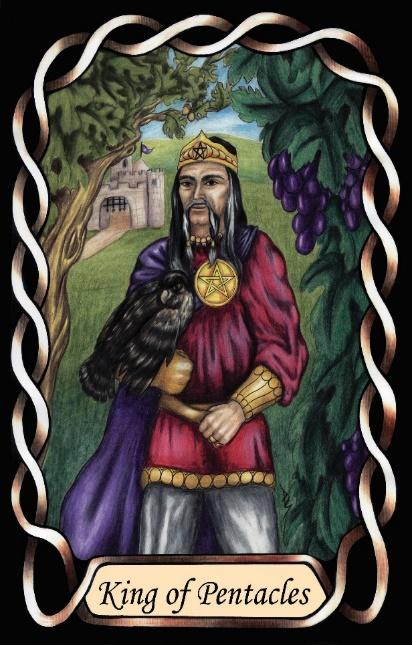

King of Pentacles
The Architect (INTP – TiNe)




King |
Rational: Abstract Utilitarian |
|||
Practical |
||||
Introverted Thinking, Extroverted iNtuition |
||||
3.3% of population |
||||
Examples: Albert Einstein, Rene Descarte |
||||
Meaning of Life: Curiosity |
||||
Astrology: Virgo (Male side) |
||||
Kings of Pentacles are quiet, analytical Rationals who seek to understand the underlying mechanics of the world. Their introverted thinking gives them a strong internal framework for how things should work, and they spend much of their time refining these internal models. They are driven by curiosity, always exploring ideas, principles, and systems to uncover deeper truths.
As Rationals in an Earth suit, they apply their abstract thinking to practical structures. They enjoy solving problems by understanding the root cause, building elegant explanations, and designing systems that are efficient, logical, and stable. Their focus is not on managing people or directing action, but on perfecting the internal logic of whatever they study.
Their extroverted intuition adds a layer of imaginative exploration, allowing them to see multiple possibilities, alternative interpretations, and unconventional solutions. This makes them inventive in a quiet, methodical way — they innovate by rethinking fundamentals rather than by pushing outward into the world.
Kings of Pentacles prefer independence and autonomy. They work best when left alone to think, analyse, and refine. Their influence comes not from leadership or persuasion, but from the clarity and precision of their ideas. They contribute by building conceptual foundations that others can use, often becoming the architects of theories, frameworks, or systems that endure long after them.
At their core, they are seekers of understanding. Their meaning in life is found in curiosity — in the joy of discovering how things fit together, and in the satisfaction of creating structures that reflect the underlying order of reality.